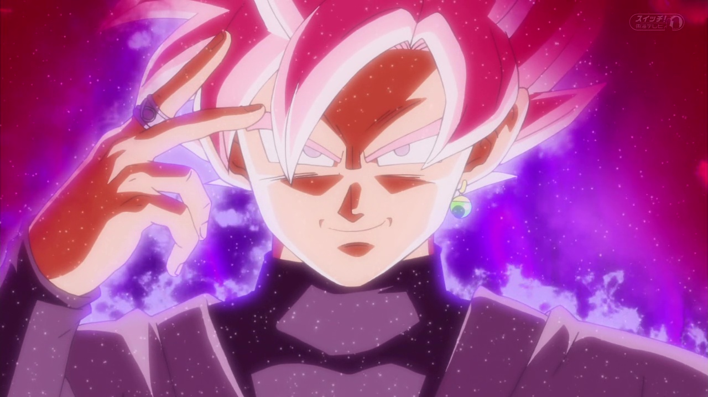

Un archivo JPG se trata de un archivo de compresion de imagenes,tanto en color como a escala de grises con alta calidad.
Un archivo en PNG comprime la información sin perdida de calidad y incluye una escala de transparencia.
Un archivo en GIF comprime la información y es un formato para hacer fragmentos en movimiento ya sea una imaen o un video